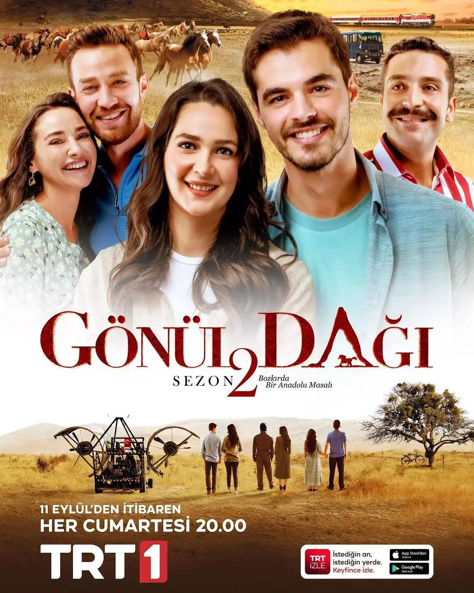

Adım Burak Sancak.1993 Denizli-Tavas doğumluyum.
Kurtlar Vadisi
Kurtlar Vadisi, 15 Ocak 2003 tarihinde Show TV'de "Bu bir mafya dizisidir" sloganıyla yayımlanmaya başlayan aksiyon, dram ve politik türündeki Türk televizyon dizisidir. 4 sezondan ve 97 bölümden oluşmaktadır. 1. sezonunda çarşamba günleri sonrasındaysa perşembe günleri yayımlanmıştır.

Gönül Dağı
Gönül Dağı, 17 Ekim 2020 tarihinde TRT 1'de yayın hayatına başlayan aile, komedi, aşk ve dram türündeki Türk televizyon dizisidir. Dizi, yazar Mustafa Çiftçi'nin bozkır hikâyelerinden esinlenerek çekilmiştir. Köprü Film yapımı dizinin yapımcılığını Ferhat Eşsiz üstlenmektedir. Yönetmen koltuğunda, daha önce geniş bir izleyici kitlesine ulaşan Yeşil Deniz dizisinin de yönetmeni olan Yahya Samancı bulunmaktadır. Dizinin başrollerinde Berk Atan, Gülsim Ali İlhan, Ecem Özkaya, Ferdi Sancar, Cihat Süvarioğlu ve Semih Ertürk yer almaktadır.[1]

Breaking Bad
Breaking Bad, Vince Gilligan tarafından tasarlanmış ABD drama televizyon dizisidir. 50 yaşında lisede kimya öğretmeni olan Walter White (Bryan Cranston), bir oto yıkamada ek iş yapmaktadır ancak bir süre sonra ileri derecede akciğer kanseri olduğunu öğrenir. Dizide Walter White ailesine para bırakabilmek için uyuşturcu kullanan muhitleri bilen eski öğrencisi Jesse Pinkman (Aaron Paul) ile birlikte metamfetamin üretmeye başlar. Kimya konusunda çok başarılı işlere imza atmış öğretmen ile uyuşturucu piyasasını iyi bilen eski öğrencisi, yüksek kalitede ve saflıkta metamfetamin üreterek uyuşturucu ticaretine başlarlar. "Şimdiye dek, namusum ve şerefim ile dürüst bir insan olarak yaşadım, ancak kanserden başka bir sonuç elde edemedim," şeklinde düşünen Walter White'ın bundan sonraki geleceği yaşanan olay örgüsüyle birlikte sadece kendisini ve ailesini değil, beraberinde tanıdığı tanımadığı herkesin geleceğini değiştirecektir. Breaking Bad, ABD'nin New Mexico eyaletinin Albuquerque şehrinde çekildi.İlk bölümü 20 Ocak 2008 tarihinde yayınlanan dizi beş sezon devam etmiş, son bölümü 29 Eylül 2013 tarihinde yayınlandı.